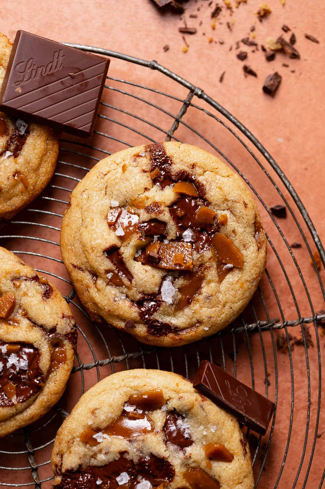

Brown Butter Toffee Chocolate Chip

Description
This is a delicious recipe for those who love chocolate and toffee.
Ingredients
Homemade Toffee
- 4 tablespoons salted European butter
- 1/2 cup light brown sugar, packed
- 1/2 teaspoon vanilla bean paste, or vanilla extract
Cookie Dough
- 14 tablespoons salted European butter
- 1/2 cup + 2 tablespoons light brown sugar, packed
- 1/2 cup granulated sugar
- 1 whole egg
- 1 large egg yolk
- 2 teaspoons vanilla bean paste, or vanilla extract
- 2 cups all-purpose flour
- 3/4 teaspoon baking soda
- 1/2 teaspoon baking powder
- 1/2 teaspoon fine sea salt
- 3/4 cup chopped dark chocolate, 72%, or chocolate chips
- 1/2 cup homemade toffee pieces
Steps
- Prepare the baking sheet: Line a baking sheet with a silicone baking
mat or parchment paper and set it aside.
- Make the homemade toffee: Over medium heat, melt the butter, then
whisk in the brown sugar and vanilla for 1 minute. Cook the sugar
for 6-10 mins, whisking occasionally, until a thermometer reads
295°F/146°C and it has a melted peanut butter consistency. If at any
point the toffee begins to separate, remove the pan from the heat
and whisk vigorously until it comes back together. Then, pour the
toffee onto the prepared baking sheet. Set aside to cool.
- Once cool (about the time it takes to brown and cool the butter for
the cookie dough), use a meat mallet or heavy object to smash the
toffee into pieces.
- Mix in the egg, egg yolk, and vanilla extract until just combined.
- Cook the butter in a stainless steel pan over medium heat until it
looks foamy, smells nutty, and has browned bits of milk solids.
Scrape into a large bowl and cool to room temperature. You should
have about 3/4 cup (160 grams) of browned butter.
- Preheat the oven to 350F/180 C. Line two large baking sheets with
parchment paper.
- Once cool, whisk in the brown sugar and granulated sugar. Then, whisk
in the egg, egg yolk, and vanilla until combined.
- Fold in the flour, baking soda, baking powder, salt, chocolate, and
toffee pieces until just combined. Set the bowl aside for 15 minutes.
- Scoop the dough with a large cookie scoop (3 tablespoons) and place
them onto the prepared baking sheets, with 7-8 cookies on each tray.
Make sure to press extra pieces of toffee and chocolate on top before
baking!
- Then, bake the first tray of cookies for 10-13 minutes, or until the
edges are golden brown but the centers are still soft and underbaked.
Let the tray cool on a wire rack while you bake the second tray.
After 10 minutes, use a spatula to transfer the cookies from the
baking sheet to the rack to finish cooling. Press more pieces of
toffee into the tops after baking for more crunch!
Home